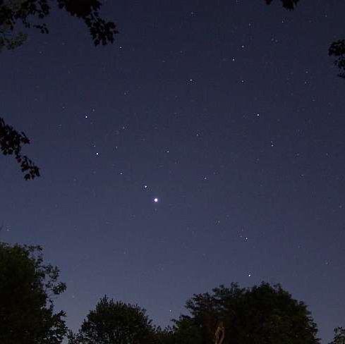

THERE ARE A LOT OF PHOTONS
I think about this sometimes.
-
A reasonable guess of the number of atoms in the universe is around 4e79. That's a very big number.
-
There are about a billion times more photons than atoms.
-
But the universe is big and this is hard to visualize.
-
I like to think of it this way…
-

Have you ever looked up at Saturn in the night sky?
It is a brilliant solid golden star, very beautiful.
-
Saturn makes no appreciable light of its own.
-
Rather, it is illuminated by the sun.
-
So when you look at Saturn piercing the veil of darkness this is what is happening…
-
The sun is spewing out photons in unimaginable numbers. They are leaving the sun at the speed of light (duh) in all directions.
-
Some very very tiny percentage of them bump in to Saturn.
About .000000006% of the light from the sun touches Saturn. A bit more touches other solar system bodies and dust. The rest goes straight into space unimpeded.
-
Saturn reflects those photons semi-randomly.
Some head straight back to the sun. Some scatter off into space.
-
A tiny percentage of those photons bounce off in just the right way to head toward earth.
About .0000000003% of the photons Saturn reflects will hit earth. Give or take depending on where we are in our relative orbits.
-
These impossibly rare photons that bounced off a round body millions of miles away and ricocheted just perfectly towards the tiny distant earth are spread thinly across the side of the planet pointed in the right direction.
-
Many of them bounce right off the bright white (reflective!) cloud tops. Many of them plunge into the ocean, meet leafy forest tops, or slightly warm desert sands.
-
But a few, a tiny few happen to line up just right with Phoenix.
-
Phoenix is a big city, and I'm a little person. But some of the Phoenix allotment have the most improbable alignment of all: they buzz right through my teeny tiny pupil and into my eye.
-
And I see Saturn.
-
How many photons line up just right to make this two million mile trans-solar-system billiard shot?
-
About a million every second as long as I'm looking up.
-
All the rest go somewhere in the universe other than my pupil. But those million per second are just for me. There are always plenty to show me and you and anyone who looks up a clear, solid, brilliant Saturn hanging in the sky.